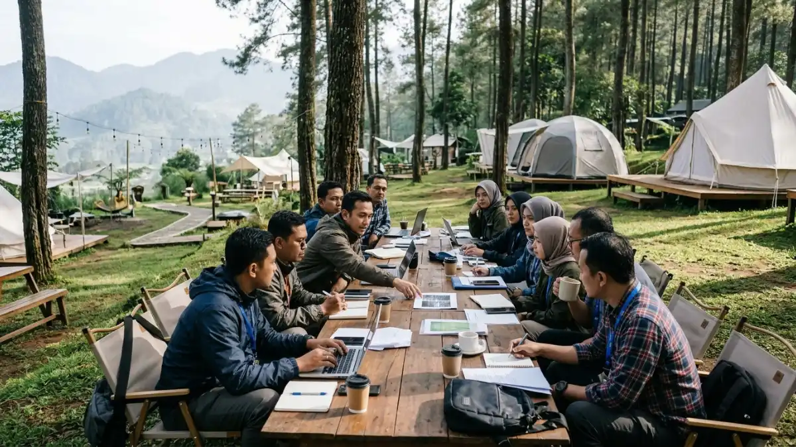
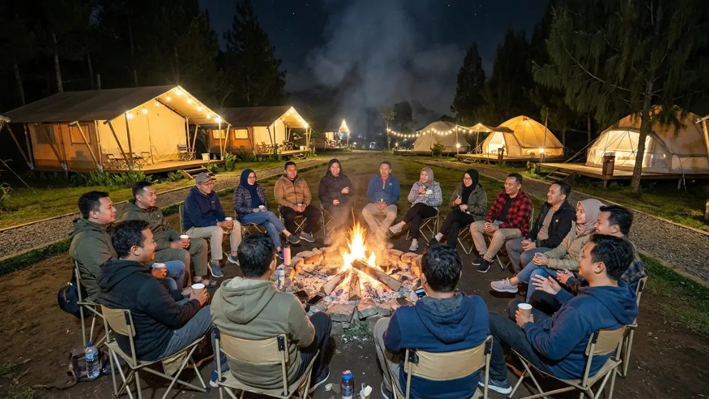

Ilustrasi: Susunan rundown meeting di glamping yang seimbang antara sesi kerja produktif dan rehat santai di alam terbuka.Rundown meeting di glamping untuk satu hari penuh sebaiknya dibagi tiga sesi, yaitu sesi pagi untuk agenda utama, siang untuk diskusi, dan sore untuk santai.
- Bagi hari menjadi tiga sesi agar peserta tetap fokus dan tidak kelelahan.
- Mulai pagi, karena udara sejuk dan arus kunjungan ke Batu lebih longgar.
- Batasi sesi inti sekitar 60 sampai 90 menit dengan jeda singkat.
- Siapkan rencana cadangan hujan dan tugas panitia yang jelas.
- Bagaimana contoh rundown meeting di glamping dari pagi sampai sore?
- Jam berapa sebaiknya meeting dimulai di Batu?
- Bagaimana mengatur sesi inti agar peserta tetap fokus di alam terbuka?
- Apa kegiatan santai yang cocok setelah meeting selesai?
- Bagaimana menyiapkan rencana cadangan jika hujan turun?
- Apa tugas panitia pada hari pelaksanaan meeting?
- Bagaimana menyesuaikan rundown untuk meeting setengah hari atau menginap?
- Kesimpulan
- FAQ
Bagaimana contoh rundown meeting di glamping dari pagi sampai sore?
Contoh rundown meeting di glamping dimulai dengan registrasi dan sarapan, dilanjutkan sesi inti pagi, makan siang, diskusi kelompok, kegiatan santai, lalu penutupan sebelum peserta pulang.
Berikut contoh jadwal yang dapat disesuaikan. Waktu bersifat ilustrasi dan perlu dicocokkan dengan jam layanan pengelola.
- 09.00 sampai 09.30, registrasi dan sarapan ringan.
- 09.30 sampai 11.00, sesi inti dan pemaparan agenda utama.
- 11.00 sampai 11.15, coffee break.
- 11.15 sampai 12.30, lanjutan sesi dan tanya jawab.
- 12.30 sampai 13.30, makan siang dan ibadah.
- 13.30 sampai 15.00, diskusi kelompok dan penyusunan keputusan.
- 15.00 sampai 16.30, kegiatan santai, misalnya BBQ atau permainan ringan.
- 16.30 sampai 17.00, penutupan dan foto bersama.
Pola ini memberi ruang bagi diskusi serius tanpa membuat peserta jenuh. Susunan lengkap biaya acara bisa dilihat di rincian biaya sewa venue glamping meeting.
Jam berapa sebaiknya meeting dimulai di Batu?
Meeting di Batu sebaiknya dimulai pagi sekitar pukul sembilan, karena udara masih sejuk, lalu lintas lebih longgar, dan peserta punya waktu cukup sebelum sore berkabut.
Kota Batu cukup padat pada musim liburan. Dinas Pariwisata Kota Batu mencatat 138 ribu kunjungan wisatawan dalam sepekan pada awal Juli 2026, sebagian besar rekreasi keluarga saat libur sekolah. Perjalanan menuju lokasi di periode seperti itu bisa lebih lama dari perkiraan.
Berangkat lebih pagi membantu rombongan tiba tepat waktu. Pastikan juga jam layanan pengelola sesuai rencana.
Situs Batu Camping mencantumkan jam operasional 09.00 sampai 22.00 WIB, dan jam khusus untuk acara rapat sebaiknya dikonfirmasi langsung.
Bagaimana mengatur sesi inti agar peserta tetap fokus di alam terbuka?
Sesi inti di alam terbuka tetap fokus bila durasinya dibatasi sekitar 60 sampai 90 menit dan diselingi jeda singkat untuk minum dan meregangkan badan.
Alam terbuka memberi banyak distraksi positif, seperti pemandangan dan udara segar, tetapi juga bisa memecah perhatian. Susun agenda dengan tujuan jelas untuk setiap sesi, misalnya keputusan yang harus dihasilkan.
Siapkan materi dalam bentuk ringkas dan mudah dibaca, karena cahaya matahari dapat membuat layar sulit terlihat. Cetakan satu halaman sering lebih praktis daripada slide panjang.
Tunjuk satu moderator untuk menjaga waktu dan satu pencatat untuk merangkum keputusan. Pembagian peran ini mencegah diskusi melebar dan membuat hasil rapat tetap terdokumentasi.

Ilustrasi: Sesi santai di area api unggun dan BBQ mempererat keakraban tim setelah seharian berdiskusi kerja.Apa kegiatan santai yang cocok setelah meeting selesai?
Kegiatan santai yang cocok setelah meeting di glamping meliputi barbeque, api unggun, permainan kelompok ringan, dan sesi berbagi cerita sambil menikmati udara pegunungan.
Sesi santai membantu mencairkan suasana setelah diskusi serius. Peserta yang tadinya hanya bertemu lewat agenda kerja biasanya lebih terbuka saat bersantai bersama.
Batu Camping menampilkan area BBQ dan api unggun dengan tungku permanen serta kayu bakar tersedia pada halaman fasilitas Batu Camping. Tanyakan ketersediaan dan biayanya untuk jadwal acara Anda.
Pilih kegiatan yang tidak menuntut tenaga besar, terutama bila peserta datang dengan pakaian kerja. Permainan ringan, kuis tim, atau sesi cerita biasanya cukup untuk membangun kebersamaan.
Bagaimana menyiapkan rencana cadangan jika hujan turun?
Rencana cadangan hujan disiapkan dengan menentukan area berteduh, memindahkan sesi luar ruang ke tempat tertutup, dan menyiapkan perlengkapan anti basah untuk dokumen dan perangkat.
Cuaca pegunungan dapat berubah cepat. Karena itu, panitia perlu tahu sejak awal area mana yang dapat dipakai bila hujan turun dan berapa orang yang muat di sana.
Siapkan map plastik atau tas kedap air untuk dokumen, serta pelindung untuk laptop dan proyektor. Siapkan juga jas hujan atau payung untuk peserta yang berpindah antar area.
Diskusikan kebijakan hujan dengan pengelola sebelum booking, termasuk kemungkinan penjadwalan ulang. Hasil diskusi tersebut sebaiknya dicatat dalam konfirmasi tertulis.
Apa tugas panitia pada hari pelaksanaan meeting?
Panitia bertugas memastikan registrasi, konsumsi, perlengkapan presentasi, penjadwalan sesi, dan komunikasi dengan pengelola glamping berjalan sesuai rundown sejak peserta tiba sampai pulang.
Bagi tugas secara jelas agar tidak ada yang bertabrakan. Satu orang menangani registrasi dan pembagian perlengkapan, satu orang mengawasi konsumsi, dan satu orang menjaga jadwal serta menghubungi pengelola.
Tunjuk juga satu penanggung jawab lapangan sebagai kontak utama bagi petugas venue. Dengan satu pintu komunikasi, permintaan mendadak seperti tambahan kursi atau air minum dapat ditangani lebih cepat.
Akhiri hari dengan pengecekan area. Pastikan barang peserta tidak tertinggal dan sampah tertangani, lalu catat masukan untuk evaluasi acara berikutnya.
Bagaimana menyesuaikan rundown untuk meeting setengah hari atau menginap?
Rundown meeting setengah hari memadatkan agenda menjadi dua sesi, sedangkan meeting menginap menambahkan sesi malam dan sesi pagi hari kedua untuk evaluasi serta penutupan.
Untuk setengah hari, ambil satu sesi inti dan satu sesi diskusi, dengan konsumsi dikurangi menjadi satu makan dan satu coffee break. Format ini cocok bila peserta harus kembali ke kantor pada sore hari.
Untuk meeting menginap, gunakan sesi malam untuk kegiatan santai dan perkenalan antar tim, lalu sisakan pagi hari kedua untuk evaluasi dan keputusan akhir. Pastikan fasilitas tidur, penerangan, dan keamanan malam sudah dikonfirmasi.
Kesimpulan
- Bagi hari menjadi tiga sesi dan mulai pagi.
- Batasi sesi inti, beri jeda, dan tunjuk moderator serta pencatat.
- Siapkan rencana hujan dan pembagian tugas panitia.
FAQ